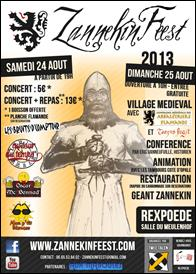
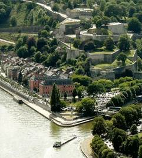
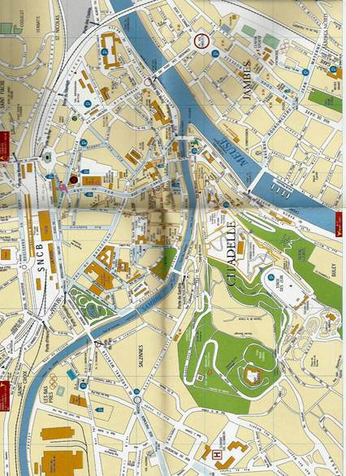
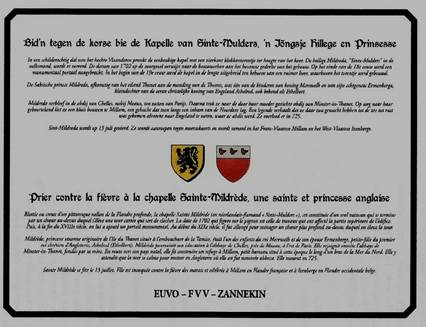
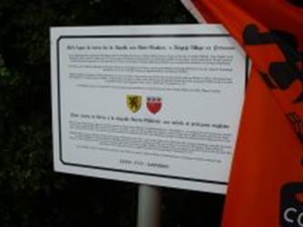

> nieuwsbrief
> 31e jg. - 4e trimester 2013
Verder in dit nummer
vindt u alle informatie met betrekking tot de
Zannekin-ontmoetingsdag te Namen. Net zoals onze Studie-uitstap
van dit voorjaar kadert ook deze activiteit binnen de herdenking
van de Vrede van Utrecht van driehonderd jaar terug. Ook Namen
werd dan een Barrièrestad binnen de Oostenrijkse Nederlanden,
waardoor de stad een Noord-Nederlands garnizoen binnen haar
muren kreeg. Ter plaatse zijn daar nog heelwat sporen van terug
te vinden.
Zannekinfeest
te Rexpoede in Frans-Vlaanderen
En nog levensblijken en dewelke! van een
Frans-Vlaamse naamgenoot vreemd aan onze Stichting ZANNEKIN.
Naast het volkse vermaak zorgde de historicus Eric Vanneufville
spreker op onze Ontmoetingsdag van 2013 te Villeneuve dAscq
er voor de bezinnende ernstige noot met een lezing over de
geschiedenis van Frans-Vlaanderen.
Naast de Zannekin-reus in zijn geboortedorp
Lampernisse beschikt Rexpoede voortaan dus ook over een
gelijknamige reus. Het programma van deze festiviteiten (zie
affiche) werd ook in het Nederlands verspreid.
ZANNEKIN-Ontmoetingsdag te Namen
in het
kader van het Vrede van Utrecht 1713 en in de Barrièrestad Namen
op zaterdag 26 oktober
2013, in samenwerking met Orde van den Prince
Graafschap Namen, Orde van den Prince Land van Edingen en het
Algemeen-Nederlands Verbond Oost- en Zeeuws-Vlaanderen
Plaatsen van samenkomst: in de voormiddag:
Château de Namur- Zaal Guillaume III, Avenue de lErmitage,
1 5000 Namen
In
de namiddag: Citadel van
Namen, Route Merveilleuse 64 5000 Namen
Programma:
10.00
uur: Welkom met koffie, thee, fruitsap, koekjes en gebakjes
10.20
uur: Verwelkoming door Mark Dubrulle uit Hastière (B),
voorzitter van de Orde van den Prince afdeling Namen
10.30
uur: Lezing De Vrede
van Utrecht 1713, ingrijpend voor de Nederlanden door
Jan van Tongeren uit Maarssen (NL), vicevoorzitter van de
Stichting Zannekin
11.10
uur: Lezing Het
Walenland binnen de Nederlanden door Wim van Heugten uit
Duiven (NL), algemeen president van de Orde van den Prince en
bestuurslid van de Stichting Zannekin
11.30
uur: uitgebreid wandelbuffet
12.45
uur: Korte wandeling naar de Citadel
13.00
uur: In de videozaal: 2000 jaar Naamse geschiedenis
13.30
uur: Rondleiding door de Souterrains (ondergrondse
bouwwerken), door de Caserne des Hollandais, de Pont des
Hollandais
14.30
uur: Toeristisch treintje langsheen de citadel
15.30uur:
Terug naar de Château de Namur voor een gezellige nababbel of
vrije tijd in de stad Namen
Deelnameprijs:
65,00 uro voor leden en hun huisgenoten, (35,00 uro voor jongeren
tot 15 jaar) - 70,00 uro voor niet-leden
Dit
is een voor iedereen geldende all-in-prijs voor de hele dag, die
niet kan aangepast worden.
Hierin
zijn begrepen:
-
huur
van de zaal in de Château de Namur met projectieapparatuur en
klankinstallatie
-
ontvangst
vanaf 10.00 uur
-
uitgebreid
wandelbuffet inclusief drank
-
toegang
en gidsen in de citadel
-
toeristisch
treintje
Opgelet! Sinds
september 2013 vinden voor een paar jaar restauratie- en
renovatiewerken plaats in de citadel, waardoor bepaalde delen
tijdelijk niet meer toegankelijk zijn voor het publiek. We
krijgen niettemin te uitzondelijken titel de gelegenheid om de
meeste ruimten toch nog te bezichtigen.
SPERTIJD:
deelname schriftelijk of via e-post aanmelden vóór 18
oktober 2013
bij het ZANNEKIN-secretariaat, Paddevijverstraat 2, 8900 Ieper
maurits.cailliau@skynet.be
en gelijktijdige betaling op een van onze rekeningen IBAN: BE13
4648 2202 5139 - BIC: KREDBEBB.
 Zicht op de Namense citadel

Stadsplan Namen met links (SNCB) het
spoorwegstation
en midden-rechts het
Citadeldomein
De Kapelle van Sinte-Mulders, n Iõngsje Hellege en Prinsesse
Op 10
augustus werd aan de Sinte Mildredakapel Sinte-Mulders in het
dialect van de streek te Millam nabij Waten, een memoriebord
ont-huld. Initiatiefnemers waren, naast ZANNEKIN,
het FVV (Forum van Vlaamse
Vrouwen) en EUVO (de
vereniging die sinds jaar en dag Nederlandstalige borden in de
Frans-Vlaamse Westhoek promoot). Ook de Orde van den
Prince-afdeling Land van Edingen werkte mee aan de realisatie
van dit initiatief.

Tijdens
de plechtigheid werd het woord gevoerd door Nederlanders uit
Noord en Zuid inclusief de Franse- of Zuidelijkste Nederlanden.
Respectievelijk namen ZANNEKIN
en het FVV het peter- en
het meterschap van dit initiatief op zich. Wim van Heugten, president van
de Orde van den Prince en bestuurslid van ZANNEKIN,
plaatste de heilige Mildreda in haar tijdskader en lichtte haar
betekenis toe (zie verder).
De E.H.
Cyriel Moeyaert lichtte op een schitterende wijze de religieuze
betekenis van Mildreda toe. Jan Paul Sepieter uit Niepkerke bij
Armentiers sprak in vloeiend Nederlands de menigte toe en wist
heel wat interessante zaken te vertellen. Jacques Delafosse uit
Tatinghem bij Sint-Omaars bracht in sappig Vlamsj een getuigenis
uit zijn jeugd tijdens dewelke hij van het naburige
Volckerinckhove naar Millam stapte om samen met zijn broer Guy
de mis in de Sinte-Mulderskapel te volgen. Jacques Porteman uit
Thernes bij Beauvais, wiens ouders in Millam wonen, gaf
interessante toelichtingen bij de kapel en het onderhoud ervan.
FVV-voorzitster Gudrun Crassaerts sprak vriendelijke dankwoorden
uit, waarna tot slot EUVO-voorzitter Karel Appelmans uit
Bray-Dunes het memoriebord onthulde. Een kleine honderd
aanwezigen vonden elkaar achteraf in de nabijgelegen Taverne Flamande voor
de lunch.

Het
tweetalige memoriebord geflankeerd door de Leo
Belgicus-vlag
met de pijlenbundel van de Zeventien
Provinciën
Sinte Mulders en de rol van de vrouw in het Europa van de Frankische tijd
Wim van Heugten, Duiven
Dames
en heren, het is een hele eer voor me als Noord-Nederlander, om
u hier in het kort te mogen toespreken.
Mesdames et Messieurs,
C`est pour moi un grand honneur de vous faire un petit
discours, à cet endroit remarquable, situé tout près de la
chapelle sainte Mildrède. C`est en néerlandais que je commence
pour en finir avec un résumé en français.
De
plek waar we zijn is in meerder opzichten heel bijzonder. We
bevinden ons in een van de vele historische grensgebieden in
West-Europa. Iets verderop, in het stroomgebied van het
riviertje de Aa met het moerasgebied de Clairmarais/Klommeres en
het Ruhout, grensden Vlaanderen, het land van Guines en Artesië
aan elkaar, historische staatkundige entiteiten die pas met de
Franse Revolutie verdwenen.
Maar
het is ook het gebied waarin het christendom al vroeg een grote
uitstraling kende. In de Frankische tijd, en vooral in de 7e
eeuw, ontstonden hier onder invloed van Ierse en Engelse
monniken, en niet te vergeten dankzij doortastende vorstelijke
families, invloedrijke abdijen als de Sint-Bertijnsabdij bij
Sint-Omaars en de abdij te Sint-Rikiers. Volgens de
bibliotheekcatalogus van laatstgenoemde niet ver van de Somme
gelegen abdij bezat men er in het jaar 831 een Passio Domini in theodisco
et latino, een passieverhaal dus in de Germaanse
volkstaal en in het Latijn.
We
zijn dus in een gebied waar de taal- en cultuurgrens verliep en
in de voorbije eeuwen manu
militaris, of als gevolg daarvan, onder druk zijn komen te
staan ten nadele van het Nederlands. Maar ook voordien lag de
streek in een van de culturele interactiezones waaraan Europa zo
rijk is maar tevens tot de culturele en mentale rijkdom van het
Avondland behoort. Ik denk dan bijvoorbeeld aan de Elzas,
Zuid-Tirol. Het klinkt misschien heel gedurfd, maar Europa is
niet ontstaan in het Ile de France rond Parijs: daar ontstond
Frankrijk als idee en als staat. En bijvoorbeeld ook niet in de
Mark Brandenburg rond Berlijn, om van Londen maar te zwijgen.
Het huidige Europa ontstond in de interactiezones waar talen en
culturen elkaar vanouds raken, beter is misschien te spreken
van ontmoeten. Dáár was (en is) steeds wisselwerking tussen
mensen en ideeën die tot het op een christelijke grondslag
gestoelde Europa heeft geleid.
Achter de stichting van abdijen als Sint-Rikiers, Sint-Bertijns, stonden bovendien vorstelijke en vooraanstaande families. Uit zon familie stamde prinses Mildreda, geboren in het midden van de 7e eeuw als dochter van koning Merewald van Mercia en Ermenburga, prinses van Kent. Ze was ook een bloedverwante van de eerste christelijke koning Ashelred van Engeland en behoorde onmiskenbaar tot de elites, of in een moderne term: talking classes (zoals de Amerikaanse socioloog Christopher Lasch, 1995